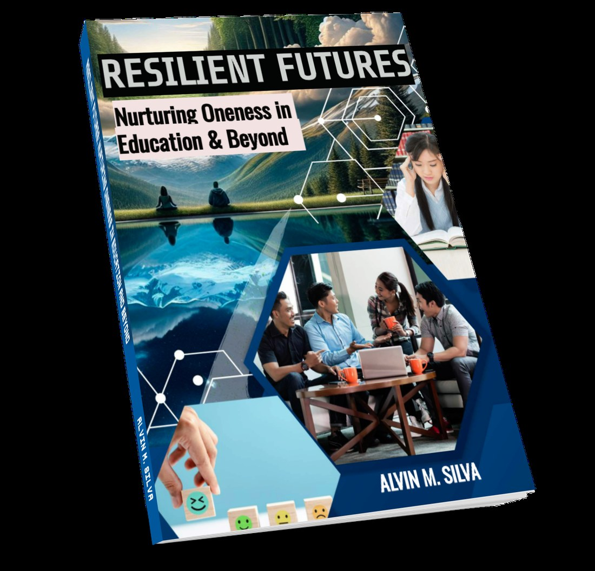

◈
Digital resilience companion
ResilienceOne
Your personal resilience companion for navigating life's challenges. Explore tools for stress management, habit building, reflection and emotional wellness tracking.
Tools · Learning · Practice
Move from insight to practice. Explore the digital tools, companion materials and interactive experiences designed around the resilience journey.
Your personal resilience companion for navigating life's challenges. Explore tools for stress management, habit building, reflection and emotional wellness tracking.
A virtual sanctuary curated for psychosocial well-being, resilience and growth, bringing together videos, audio and infographics for reflection and learning.
Experience the book through a page-turning digital reader. The public preview gives you a taste of the framework before you continue with the complete edition.

Companion Guide
A practical guide to personal and collective resilience for the people and institutions that shape society.
This specialized companion extends the insights of Personal Resilience: The Path to Oneness into education, public service and community life — with actionable strategies for emotional strength, adaptability and interconnectedness.
The tools are designed to help you translate the ideas in the book into reflection, action, learning and sustainable change.
Get the Complete BookPractice Tools
Companion tools from Cognitio+ that turn the book’s framework into daily practice.
See where you stand on each CASE dimension and get a next step.
Design tiny habits with the B = MAP behavior model.
Sample behaviors, prompts, and celebrations for each CASE dimension.
Rate your emotions daily and spot patterns and triggers.
A curated sound and audio garden for calm and recovery.
Personal Resilience: The Path to Oneness · by Alvin Silva, MDM · Cognitio+
TermsReturns & refundsCustomer welcomeReader accesshello@cognitioplus.com